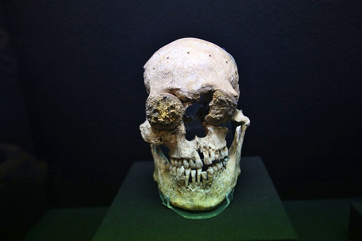

セントロ界隈/メキシコシティ Centro/CDMX
メキシコでの修行もいよいよ残りわずかである。
最後にメキシコのど真ん中、メキシコシティのセントロを散歩して旅を締めようかと思う。
中南米のスペインの旧植民地の国は大抵街の中心エリアが
セントロと呼ばれ、その真ん中に
ソカロという広場がある。
で、大抵その広場の前には大聖堂がある。
で、こちらがメキシコシティのど真ん中にある
メトロポリタン大聖堂 Catedral Metoropolitana 。
メキシコ全土のカトリック教会の総本山でもある。
そんな大聖堂前で何やら
怪しげな人達が民族衣装を着て集まっている。
ここメトロポリタン聖堂はスペイン人が来る前まではアステカの神殿があった聖地なのだ。
そうしたアステカの神を偲ぶためなのか、単なる見世物なのか判らないが、カテドラルの前にはたくさんの部族が民族衣装を着てダンスを披露したり、リンピア（魔除け）を行っていた。
アグレッシブな衣装の方々のダンス。
ドヤ顔で立っていたので1枚パチリ。
別にチップとか請求されませんでした。
で、さっきから
物凄く気になっていたこちらのお方にリンピアをしてもらいました。
獣の皮を被ったパンキッシュなメイクの兄貴にバンバン身体を叩かれ葉巻の煙を吹きかけられ、魔除けをしてもらった。料金（チップ）は牛丼大盛り位だったかな。
まあ、観光客向けのなんちゃってリンピアだとは思うが、衣装が衣装だけにマジで効いたような気がした。
今回も因果な場所に多々行ったので多少の厄落としになれば幸いだが…。
日も傾いてきました。
折角だから大聖堂の中も見てみましょうか。
濃厚な彫刻が印象的なファサード。
祭壇はこってりした装飾だが、これまで訪れてきた超絶バロック教会に比べれば装飾されている箇所は限定的だ。
それでも柱に施された装飾はとろけるチーズが溶けかかってだら～んと垂れ下がっているみたいでカッコよかったです。
教会を出ると、すぐ近くに遺跡があった。
テンプロ・マヨール Templo Mayor といい、アステカ帝国の巨大な神殿の遺跡と出土物の博物館だった。
発掘が始まったのが1978年。意外と最近なのだ。
展示で興味深かったのが
生贄関係のもの。
↑コレは生贄になった人々の頭蓋骨を象ったツォンパントリという祭壇。かつては本物の首が捧げられていたという。
あまり詳しくはないが、マヤ、アステカの人々の基本は太陽信仰で、
生贄を捧げないと次の日の太陽が昇らないと固く信じられており、毎日生贄を奉げていたという。
そのために近隣諸国と戦を行い、生贄となる人間を補充していたそうな（参照；映画「アポカリプト」より）。
当時の生贄を捧げる様子を描いたイラスト。
毎日太陽をお迎えするためにマッチポンプのように人を殺しまくっていたのだ。
これは心臓を捧げる容器だった、かな。
心臓を捧げる容器は数パターンあった。
アステカ神話における死の神、ミクトランテクートリ。

生贄にされた人の頭蓋骨。
後から目が入れられるのには何か意味があるのだろうか？
お前ら成仏せいよ！的な？

それにしてもホント頭蓋骨が好きなんだなあ。
違ってたらゴメンなんだけど、メキシコの麻薬カルテル同士の抗争とかで敵の構成員の生首とか切って車のボンネットとか街の路傍に並べたりするじゃないですか（実際に見たことないけど）。
あれってこの辺の古代メキシコの民族的記憶みたいなものがあるんだろうか？
もっとも日本人も中世には首切りの風習はあったわけだから一概には言えないが。
鷲の姿をした戦士の像。

メキシコの博物館にありがちなパターンだが、軽く入った割りには見どころ満載で時が経つのを忘れてしまう。
おっと、もう暗くなってるじゃないか！
普段はガラリとしているというソカロ（広場）も新年なので特設のアイススケート場が出来ており大勢の人が並んでいた。
これにてメキシコの修行はお終い。
あまりにも楽しかったので、また来ることを心に誓いつつ、ここはひとまず…
アディオス、アスタレーゴ！
次の修行へGOGOGO！